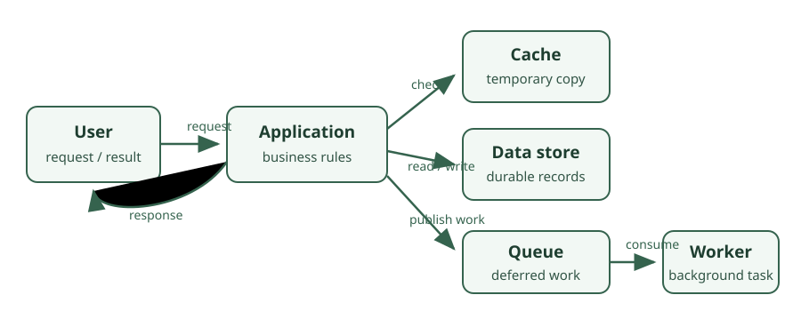

Application Architecture¶
Application architecture is the set of decisions about how the parts of a system are divided, how they communicate, where data lives, and how the whole system keeps working as traffic, data, and teams grow. A single Express server and one database can serve an early product well; the same product at a hundred times the traffic needs caches, queues, replicas, and a clear structure that many developers can change safely.
Architecture is about trade-offs, not best answers. Every cache adds the risk of stale data, every queue adds eventual consistency, and every extra service adds a network call that can fail. This section teaches what each option buys, what it costs, and how to choose deliberately.

What this section teaches¶
You will learn how to:
- Structure an application: monoliths, modular monoliths, microservices, layered and clean architecture, design principles, and patterns.
- Model a business domain with domain-driven design, and decouple parts of a system with events.
- Make reads fast with caching, and choose the right caching strategy, invalidation approach, and eviction policy.
- Use Redis for caching, sessions, rate limits, leaderboards, locks, pub/sub, and streams, and run it reliably.
- Move work and communication onto message queues with RabbitMQ, Kafka, or cloud queues, with the right delivery guarantees.
- Scale services and databases, reason about availability, consistency, and the CAP theorem, and plan capacity.
- Design complete systems with a repeatable process, estimates, and case studies such as a URL shortener, chat application, and news feed.
How architecture choices appear in one request¶
Follow a request for a user's news feed through a scaled system:
- A load balancer sends the request to one of many stateless application instances, so any instance can serve any user.
- The application checks a cache (often Redis) for the user's feed and returns it immediately on a hit.
- On a miss, it reads from a read replica of the database, accepting that the replica can lag slightly behind the primary (replication lag).
- When someone the user follows publishes a post, the write goes to the primary database, and an event is published to a message queue.
- Workers consume that event and update the feeds of the author's followers in the background, so the author's request returns quickly.
- Each part can be scaled, replaced, or fail independently, which is the goal and the cost of the design.
Learning path¶
The navigation is organized into six subject groups:
- Software Architecture: how to structure code and services, and the principles and patterns behind good structure.
- Caching: making repeated reads fast without serving wrong data.
- Redis: the in-memory data store most backends use for caching and coordination.
- Message Queues: asynchronous communication between parts of a system.
- Scalability: growing capacity while staying available and consistent enough.
- System Design: combining all of the above to design complete systems.
A useful order is the order above. If you are preparing for system design interviews, read Scalability and the System Design process early, then return to the other subjects as the case studies need them.
Every lesson includes an explanation of how the concept works, practical examples, best practices, important terminology, common mistakes, revision questions, and official learning resources. Each subject ends with interview questions and answers.
Related sections¶
- Backend Development for HTTP, APIs, authentication, rate limiting, background jobs, and real-time communication inside a single service.
- Databases for data modeling, indexes, transactions, replication, and sharding.
- Servers and Infrastructure for load balancers, reverse proxies, and CDNs.
- DevOps and Deployment for containers, CI/CD, and monitoring.
A first practical exercise¶
Take the task API from the Backend section and evolve it:
- Add a Redis cache in front of
GET /tasks/:idusing cache-aside, and measure the hit ratio. - Invalidate the cached task when it is updated, and explain what a user could see if the delete happened before the database write.
- When a task is completed, publish an event to a queue and send the "task completed" email from a worker instead of the request handler.
- Run two instances of the API behind a load balancer and confirm nothing breaks because state lived in memory.
Before moving on¶
- Why is every architectural choice a trade-off rather than an upgrade?
- What does a cache, a queue, and a read replica each make faster, and what does each make harder?
- Why must application instances be stateless before they can be scaled horizontally?
- When is a single, well-structured service a better choice than microservices?